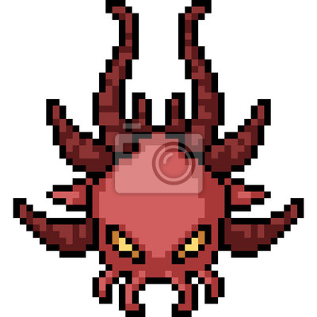

Venha averiguar
o outro lado
Uma história com surpresas.
O experimento de um começo de desenvolvimento.

Uma história com surpresas.
O experimento de um começo de desenvolvimento.
Criado pelos desenvolvedores do jogo "The last tool" (em desenvolvimento), o site é um suporte para o
conhecimento do manual do jogo, acompanhamento do desenvolvimento do jogo e expor contexto da história do jogo,
bem como as dos personagens ou eventos que, talvez, até agora jogadores não sabiam ou estiveram na curiosidade.
Como dito, vocês basicamente terão as informações do jogo aqui no site apartir da conclusão das versões do jogo.
O jogo será desenvolvido por versões devido as dificuldades do desenvolvimento e a prorogação
do jogo como um todo. Por aqui será lançado trailes e vocês poderam conversar comigo clicando
no link "FALE COMIGO PELO E-MAIL", logo acima. E por fim vocês verão imagens do desenvolvimento decorrendo.
O jogo por sí tem uma história um pouco meio abragente. Ou seja, partes da história que são
um pouco curiosiosos (se for o caso), ou então complemetares que não forão visto dentro do jogo, para que o foco
do jogador seja jogar diretamente o jogo. Caso bateu uma curiosidade dos fatos do game, então, depedendo qual seja,
poderá ter uma resposta por aqui.
Para acessar o site com informações do desenvolvimento e enredo, click no link abaixo: